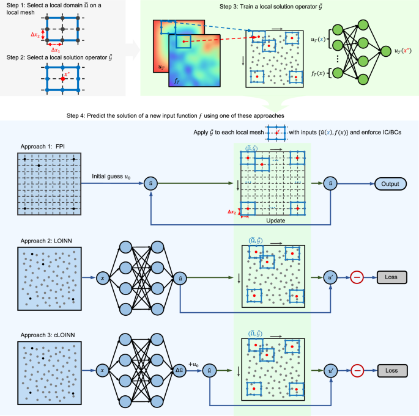

Nature Communications (2025)
One-shot learning for solution operators of partial differential equations
Learns PDE solution operators from one training pair by exploiting the locality of derivatives.
Learning and solving governing equations of a physical system, represented by partial differential equations (PDEs), from data is a central challenge in many areas of science and engineering. Traditional numerical methods can be computationally expensive for complex systems and require complete governing equations. Existing data-driven machine learning methods require large datasets to learn a surrogate solution operator, which could be impractical. Here, we propose a solution operator learning method that requires only one PDE solution, i.e., one-shot learning, along with suitable initial and boundary conditions. Leveraging the locality of derivatives, we define a local solution operator in small local domains, train it using a neural network, and use it to predict solutions of new input functions via mesh-based fixed-point iteration or meshfree neural-network based approaches. We test our method on various PDEs, complex geometries, and a practical spatial infection spread application, demonstrating its effectiveness and generalization capabilities.